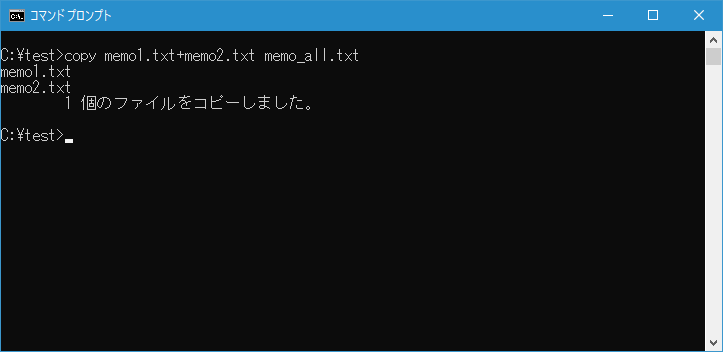

ファイルのコピー(COPY)
1つまたは複数のファイルのコピーをすることができる COPY コマンドの使い方について解説します。
目次
COPYコマンドの使い方
COPY コマンドを実行すると1つまたは複数のファイルをコピーすることができます。書式は次の通りです。
COPY [/D] [/V] [/N] [/Y | /-Y] [/Z] [/L] [/A | /B] 送り側 [/A | /B]
[+ 送り側 [/A | /B] [+ ...]] [受け側 [/A | /B]]
オプションが非常に多いので、今回説明するものだけに絞ると次の通りです。
COPY [/Y | /-Y] 送り側 [+ 送り側 [+ ...]] [受け側]
1つまたは複数のファイルをコピーする
例えばカレントディレクトリにある memo.txt を同じディレクトリ内に memo_back.txt としてコピーする場合には次のように実行します。
copy memo.txt memo_back.txt
「1 個のファイルをコピーしました。」と表示されてコピーが完了し新しいファイル memo_back.txt が作成されました。
コピー元の memo.txt とコピー先の memo_back.txt のファイルの中身を TYPE コマンドを使ってそれぞれ表示してみるとまったく同じであることが確認できます。(TYPE コマンドについては「テキストファイルの内容を表示(TYPE)」を参照してください)。
-- --
別のディレクトリに同じ名前でコピーする場合はファイル名を省略することができます。例えばカレントディレクトリにある memo.txt を c:\test\back ディレクトリに同じファイル名でコピーする場合には次のように実行します。
copy memo.txt c:\test\back
-- --
ワイルドカードを使用することで複数のファイルを別のディレクトリにコピーすることができます。例えばカレントディレクトリにある拡張子が.txt のファイルをすべて c:\test\back ディレクトリに同じファイル名でコピーする場合には次のように実行します。
copy *.txt c:\test\back
コピー先の c:\test\back ディレクトリを確認してみると、3つのファイルが同じ名前でコピーされていることが確認できます。
ディレクトリに含まれるファイルをまとめてコピーする
COPY コマンドを実行する時にコピー元にディレクトリを指定すると、ディレクトリに含まれるファイルがすべてコピーされます。この時コピー先もディレクトリを指定する日通用があります。例えば c:\test\back ディレクトリの中にあるファイルをすべて d:\test ディレクトリへコピーするには次のように実行します。
copy c:\test\back d:\test
コピー先の d:\test ディレクトリを確認してみると、3つのファイルが同じ名前でコピーされていることが確認できます。
複数のファイルを1つのファイルにまとめる
COPY コマンドでは複数のファイルを1つのファイルにまとめることができます。次の書式を使います。
COPY 送り側1+送り側2[+ ...] 受け側
コピー元として複数のファイルを「+」を使って続けて記述してください。例えばカレントディレクトリにある memo1.txt と memo2.txt をまとめてカレントディレクトリの memo_all.txt というファイルを作成する場合次のように実行します。
copy memo1.txt+memo2.txt memo_all.txt

2つのファイルの内容がまとめられて1つのファイルが新しく作成されました。TYPE コマンドを使ってコピー元の2つのファイルの中身と、新しく作成されたファイルの中身を確認してみると、コピー元の2つのファイルがまとめられていることが確認できます。

コピー先に同じ名前のファイルがあった時に上書き保存するかどうかの確認を行わない
COPY コマンドを使ってファイルをコピーする場合、コピー先に同じ名前のファイル名が既に存在していた場合、上書きして保存するかどうかの確認が行われます。例えばカレントディレクトリにある memo.txt を c:\test\back ディレクトリにコピーしようとしたときに、コピー先のディレクトリに同じ名前の memo.txt が存在すると上書き保存するかどうかの確認が行われます。
copy memo.txt c:\test\back
上書きする場合は[y]キーを押したあとで[Enter]キーを押します。上書きはせずにコピーを行わない場合は[n]キーを押したあとで[Enter]キーを押します。
このようにデフォルトではコピー先に同じファイル名があった場合に上書きするかどうかの確認をしますが、確認を行わずに上書きでコピーする場合には「/Y」オプションを使って次のように実行します。
copy /y memo.txt c:\test\back
コピー先に同じファイル名のファイルがあっても確認せずに上書きでコピーが行われました。
-- --
COPY コマンドを使ってファイルをコピーする方法について解説しました。
( Written by Tatsuo Ikura )

著者 / TATSUO IKURA
初心者～中級者の方を対象としたプログラミング方法や開発環境の構築の解説を行うサイトの運営を行っています。